Environmental Awareness
Protecting the Río Motagua
GUATEMALA
The Río Motagua is Guatemala's most important river. Poor soil management practices in the river's watershed are causing massive erosion. Forests in the mountainous parts of the watershed have been clear-cut and replaced with hillside farming. Here loose volcanic soils are planted with annual crops, like corn, without respect to the contour and without any type of terracing. It is urgent that proper methods of soil and water management be employed when farming this vital watershed. Beginning in 1998, EPIC has supported farmer education in soil conservation and water management on the north side of the Río Motagua in the Departments of El Quiché and Baja Verapaz.
Tropical Storm Agatha hits the Río Motagua watershed
On May 29 and 30, 2010, Tropical Storm Agatha hit Guatemala. Bridges and roads were destroyed all over Guatemala, and serious erosion of hillsides resulted in terrible landslides throughout the highlands. Erosion and flooding were so bad in the upper part of Río Motagua's watershed that the bridge connecting the Departments (states) of Sacatepequez and Chimaltenango with the Departments of Baja Verapaz and El Quiché was swept away. The program area where EPIC and FUNDAMARCOS work was cut off, and Program Director, Felipe Tomás, had to take a 9 hour detour to reach Baja Verapaz.
The rainy season continued severe until August, when it got worse. For 21 days it rained continually on already soaked hillsides. Over a broad area, more landslides cut off roads, mudslides covered houses, and erosion washed away topsoil and whole fields.
Within the program area, the soil conservation techniques that were already in place proved their effectiveness! Sheet erosion carried away far less topsoil from the fields of these farms, and one saw hardly any landslides. Although bean crops were severely damaged and many vegetables in home gardens were killed by mildew and too much water, the corn, coffee and fruit trees that program participants had planted using soil and water management practices produced well in spite of the rain. The increased price of food which is now threatening Guatemala's urban poor will actually enable program farmers to have a reasonably good year economically. They have something to sell and the country really needs food this year.
Photos and Report:
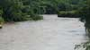 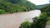
{kind=link}
{kind=link}
 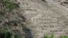
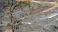
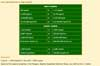
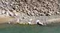
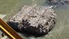
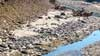
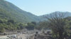
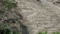
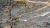
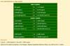
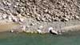
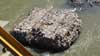
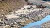
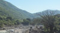
{kind=link}
{kind=link}
{kind=link}
{kind=link}
{kind=link}
{kind=link}
{kind=link}
{kind=link}
{kind=link}
Report on sediment carried by the Río Motagua
In 1999 EPIC gave a grant to scientist, Kim Walton, to collect samples and document the soil erosion and its effect on the Río Motagua's watershed. The data collected by Kim indicated what is occurring with normal rainfall. The devastating floods that occurred when Tropical Storm Agatha hit Guatemala represent what happened with extraordinary rainfall. Bridges and roads were destroyed, and serious erosion of hillsides filled the Río Motagua with sediment.
Ms. Walton prepared a report of her research entitled Río Motagua: Baseline Suspended Sediment Study, July 1999. The results of Kim's study show clearly the incredible erosion taking place in the watershed. As stated in the study's summary, in July 1999 on days when there was little or no recent rainfall, the Río Motagua transported in suspension between 3.7 kg/second and 9.6 kg/second of sediment. The sediment quantities soared when there was moderate to high rainfall. It then measured from 460 kg/second to more than 1,312 kg/second. If these figures are converted into tons/hour, the sediment load would measure between 15 tons/hour and 38 tons/hour on days with little or no rain. However, on days with moderate to high rainfall, the sediment load increased to quantities between 1,825 tons/hour and more than 5,206 tons/hour. This means that at this location on the upper portion of the river, the Río Motagua is carrying 124,956 tons of soil every 24 hours on days of heavy rain. As Kim states in her conclusion, "rainfall washes unprotected soil off the farms and into the river in huge, measurable, and alarming amounts". Kim Walton received a grant from EPIC to assist her in this fieldwork in Guatemala. Additional data is available at Sediment Carried by the Río Motagua in July 1999. See images to the left for details from the report.